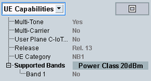

UE Capabilities
The UE capabilities characterize the radio access capabilities of the UE. The capability information is specified in 3GPP TS 36.331.
To display the most important UE capabilities, select "UE Capabilities" in the field below the event log area.

UE capabilities in the main view
To maximize the UE capabilities area and display all capability information, press the button to the right.
The provided UE capability information is described in the subsections.
Contents